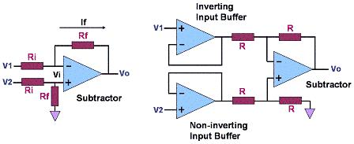

Instrumentation Amplifiers (In Amps)
An
Instrumentation Amplifier,
or
In-Amp,
is a closed-loop,
differential-input
amplifier with an output that is
single-ended
with respect to a reference terminal. It has closely-matched input
resistances that are very high in value, typically greater than 109
ohms. Like an operational
amplifier, an instrumentation amplifier must have very low
input bias currents (currents flowing in or out the input terminals,
typically in the order of several nA for in amps), and a very low output
impedance (nominally a few milliohms at low frequencies).
The main
difference
between an instrumentation amplifier and an operational amplifier is the
fact that an
op amp
is an
open-loop
device, whereas an
in-amp
comes with a
preset
internal
feedback
resistor
network that is isolated from its input terminals.
Because it is
an open-loop device, an op amp's function and gain is set by providing it
with
external
components that generally constitute a
feedback
circuit between its output and its
inverting
input.
On the other hand, the gain of an in-amp, which is used primarily as an amplifier of
low-level
signals in noisy environments, is either manufacturer-preset or may be set
by the user using an
external
gain resistor
or by
manipulating
internal
resistors via some of the in-amp's pins.
Of course, an
operation amplifier may be utilized as an instrumentation amplifier. This
is done by configuring it as a
differential amplifier or
subtractor,
as shown in Figure 1a, the circuit of which gives an output voltage Vo
that is proportional to the difference between the input voltages, or
Vo = Rf/Ri
(V2-V1).
This equation may be derived as follows:
1)
Vo = -If Rf +
Vi where
Vi is the voltage at either input of the op amp;
2) but
If = (V1-Vo)/(Ri+Rf)
and
Vi = V2(Rf/(Rf+Ri));
3) thus, Vo =
(Vo-V1)(Rf/(Rf+Ri)) + V2 (Rf/(Rf+Ri));
4) or VoRf +
VoRi = (V2-V1)Rf + VoRf;
5) simplifying,
Vo = Rf/Ri
(V2-V1).
A single op
amp configured as a subtractor
is capable of serving as an in amp for modest applications, i.e., it can
amplify
the
difference
between very small signals and
reject
those that are
common-mode
(or common to both inputs). This circuit, however, suffers from certain
limitations. Commercially
available instrumentation amplifier IC's employ
multiple
internal
op amps to
overcome
these limitations and provide a much superior differential amplification
performance.
Figure 1b shows an example of a simple in-amp circuit consisting of
multiple op amps (three op amps, to be exact), two of
which are used for
input buffering
with the third one acting as the
subtractor
itself.
Input buffering eliminates problems associated with relatively low input
resistances or resistance mismatch between inputs.

Figure 1.
a) an operational amplifier configured as a differential amplifier to
serve as a simple in-amp (left); b) an in-amp consisting of three (3) op
amps (right)
Properties
that define a
high quality
instrumentation amplifier are: 1) high common mode rejection ratio; 2) low
offset voltage and offset voltage drift; 3) low input bias and input
offset currents; 4) well-matched and high-value input impedances; 5) low
noise; 6) low non-linearity; 7) simple gain selection; and 8) adequate
bandwidth.
Examples of
applications
where in-amps may be used include: 1) data acquisition from low output
transducers; 2) medical instrumentation; 3) current/voltage monitoring; 4)
audio applications involving weak audio signals or noisy environments; 5)
high-speed signal conditioning for video data acquisition and imaging; and
6) high frequency signal amplification in cable RF systems.
See Also:
What is a
Semiconductor?; Operational Amplifiers
HOME
Copyright
©
2005
www.EESemi.com.
All Rights Reserved.